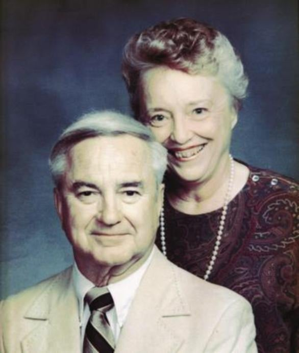

Russell and Shirley Dermond: a couple married 68 years were killed in a gated lake community. His head was never found. Twelve years on, no one is named.
Russell Dermond, 88, and Shirley Dermond, 87, lived in Great Waters, a gated neighborhood of Reynolds Plantation on Lake Oconee in Putnam County, Georgia. They missed a neighbor's Kentucky Derby party on May 3, 2014. On May 6 a neighbor found Russell's body in their garage. He had been decapitated, and his head has never been found. Shirley was missing, though her purse, phone and both cars were still there. Ten days later fishermen found her body in the lake, weighted with concrete blocks. There was no forced entry and nothing was taken. No suspect has ever been named.
Case file at a glance
Someone got into a gated community, killed two people in their late eighties, took one body to the lake and left without a trace. The sheriff says more than one person was involved and that "somebody knows."
- No break-in.No forced entry, no struggle, nothing taken; her purse, phone and both cars were left (NBC News, 2014; Wikipedia, citing the AJC).
- His head is missing.The sheriff has said residue on Russell's collar suggests he was shot, and the head may have been taken to hide the bullet (Wikipedia, citing local reports).
- New DNA.Private labs found DNA on evidence that does not belong to the couple (Atlanta News First, Feb 2025; Eatonton Messenger, Apr 2026).
- No suspect.No one has been named, described or charged (CBS News Atlanta; WSB-TV, May 2026).
Editorial assessment of public sources, not a finding of fact. Nobody named here has been charged unless this page says so.
What happened
Details come from the FBI, NBC News (May 2014), FOX 5 Atlanta (2024), Atlanta News First (2025), the Eatonton Messenger (Apr 29, 2026), CBS News Atlanta and WSB-TV (May 2026), and Wikipedia's summary of the AJC, Macon Telegraph and other 2014 reports.
Retirement
The couple retire to the gated Lake Oconee community (Eatonton Messenger).
Last seen
Russell is last seen running errands in Eatonton (Wikipedia, citing local reports).
Missed party
They do not arrive at a neighbor's Kentucky Derby party. Investigators believe they were killed that Saturday, based on a half-finished Friday crossword and the weekend paper left in the driveway (Eatonton Messenger, 2026).
Russell found
A neighbor bringing flowers finds the door unlocked and Russell's decapitated body in the garage. Shirley is missing (NBC News; Eatonton Messenger).
Shirley found
Fishermen find her body in Lake Oconee, miles away, weighted with concrete blocks. She died of blows to the head before she went into the water (Wikipedia, citing the AJC).
No suspects
The sheriff says the couple's children were interviewed and cleared, and rules out a link to their late son's death in 2000 and a Mafia link (Wikipedia; Eatonton Messenger).
DNA and reward
The FBI offers up to $20,000 and the sheriff $5,000. Labs in Texas and Utah found DNA on clothing that did not belong to the couple (FOX 5 Atlanta, Apr 29, 2024).
Waiting on labs
Sheriff Sills says Othram and Sorenson Forensics found DNA that is not the victims'; he hopes to run it through CODIS and then genetic genealogy (Atlanta News First, Feb 28, 2025).
Twelve years
Sills says six or seven items never tested before have gone to private labs, and that he believes the killings did not happen at the house (Eatonton Messenger).
New appeal
The FBI and the sheriff renew their appeal for information (CBS News Atlanta; WSB-TV).
Victims
A couple married 68 years.

From the FBI "Seeking Information" poster. A U.S. government work, in the public domain.
DiedRussell Dermond, 88, and Shirley Dermond, 87
Russell was a Navy veteran from Hackensack, New Jersey, and a retired clock-company executive who had owned fast-food restaurants (Wikipedia, citing local reports). They had been married 68 years and lived on Lake Oconee since retiring. We do not name their children.
Their photo is from the FBI poster (public domain).
Evidence
What exists, and what each piece may or may not mean.
| Item | What is known | Disputed or unknown | |
|---|---|---|---|
| The house | No forced entry, no struggle, nothing taken. Her purse, phone and both cars were left (NBC News; Wikipedia). | The sheriff believes they were killed elsewhere (Eatonton Messenger, 2026). Where is unknown. | |
| Russell's head | Never found. Residue on his collar suggests he was shot; the sheriff has said the head may have been taken to hide the bullet (Wikipedia, citing local reports). | Not confirmed by a released autopsy. | |
| Concrete blocks | Shirley's body was weighted with concrete blocks (NBC; Atlanta News First). | Where the blocks came from is not public. | |
| DNA | Othram (Texas) and Sorenson Forensics (Utah) found DNA on evidence, including Russell's clothing, that does not belong to the couple (FOX 5 Atlanta, 2024; Atlanta News First, 2025). More items were sent in 2026 (Eatonton Messenger). | Whether it matches anyone in CODIS or a genealogy database has not been announced. | |
| The kitchen sink | Tested for washed-away blood; none was found (Eatonton Messenger, 2026). | ||
| The place | Great Waters, a gated community at Reynolds Plantation on Lake Oconee. |  Reynolds Plantation on Lake Oconee, March 2015 (not the scene). Photo: Christopher Michel, CC BY 2.0, via Wikimedia Commons. | How the killers got in and out of the gated community is not public. |
Public documents
The FBI poster and the sheriff's interviews are the public record. Autopsy reports, lab results and the case file are not public.
| Document | Holder | What it shows | Access |
|---|---|---|---|
| FBI Seeking Information poster | FBI | Summary, photo and reward. | Online, free |
| Private lab DNA results | Othram; Sorenson Forensics | Unknown DNA on evidence (reported by FOX 5 Atlanta, Atlanta News First, Eatonton Messenger). | Quoted in news |
| Autopsy reports | Georgia Bureau of Investigation | Causes of death. | Request needed |
| Case file | Putnam County Sheriff's Office | The investigation. | Withheld or sealed |
Access labels: Online, free = we could open it. Fan-hosted copy = a private researcher posted scans; originals are held by the named agency, and we cannot vouch for completeness. Quoted in news = reporters read it; we did not see the document itself. Request needed = held by an agency or court. Withheld = the holder has not released it. We cannot reach non-public records, and we do not try to.
Online discussion (unverified)
Where people talk about this case online, and how to read it.
| Platform | Live search | What you tend to find |
|---|---|---|
| Google: Reddit | site:reddit.com search | Public Reddit threads that Google has indexed, including old discussions. |
| Google: X and Twitter | X and Twitter posts | Public posts and profiles that appear in search results. |
| Google: Facebook | Public Facebook pages and posts | Only public pages and groups that Google can see. Private groups never appear. |
| Google: Instagram and TikTok | Instagram and TikTok | Public posts, memorials, and videos. |
| Google: forums | Forums and message boards | Long-running true-crime forums. |
| Google News | Latest news | Newest reporting, which is usually more reliable than posts. |
| Websleuths | Case thread | A long-running case thread. Posters often save links to old news reports; we follow those links and cite the news, never the posts. |
| Search Reddit | Long discussion threads and theories, often by amateur researchers. No sign-in needed to read. | |
| X (Twitter) | Search X | Short posts, news links, and anniversary notes. May require sign-in. |
| Search Facebook | Public groups and family or community pages. Requires sign-in. | |
| Search #dermond | Memorial and true-crime posts. Requires sign-in. | |
| YouTube | Search YouTube | Documentaries, news clips, and interviews. Quality varies widely. |
Be careful with online theories. Naming a private person as a suspect can harm an innocent family, and many "identifications" on forums have been wrong. Our own tools could not read these platforms: Reddit blocks automated access, and the others require an account. The Google searches above work from your browser. To get new public mentions by email, make a free Google Alert for the case name in quotation marks.
Coverage timeline and verification
What local and national reports say, and when we last checked for a solution.
| Date | Outlet | What it reported | Link |
|---|---|---|---|
| May 8, 2014 | NBC News | Russell found decapitated; Shirley missing. | Read |
| Apr 29, 2024 | FOX 5 Atlanta | FBI $20,000 reward; new DNA evidence. | Read |
| Feb 28, 2025 | Atlanta News First | Sheriff waiting on Othram and Sorenson results. | Read |
| Apr 29, 2026 | Eatonton Messenger | Twelve years: more items sent to labs. | Read |
| May 8, 2026 | CBS News Atlanta | FBI renews appeal. | Read |
| May 8, 2026 | WSB-TV | New push for answers. | Read |
Status is re-checked on a regular schedule. If you know of a development we missed, use the clue form near the top of this page or the contact form, and include a link.
Suspects
No suspect has been named, described or charged.
The killer or killers
Why named: Killed the couple, decapitated Russell and took Shirley's body to the lake. The sheriff believes more than one person was involved (Wikipedia; Eatonton Messenger).
Against: No name, description or vehicle has been released.
Their children
Why named: Questioned as relatives always are.
Against: The sheriff says they were interviewed and cleared. We do not name them.
Where a card shows a silhouette, we found no photo. Anyone who wants a photo added, changed, or removed can use the contact form at the bottom of this page.
Latest: waiting on DNA
The newest public information is the sheriff's April 2026 interview and the FBI's May 2026 appeal.
What is known
- Private labs found DNA that is not the couple's (FOX 5 Atlanta, 2024; Atlanta News First, 2025).
- Six or seven untested items were sent to Othram and Sorenson in 2026 (Eatonton Messenger, Apr 29, 2026).
- The FBI renewed its appeal on May 8, 2026 (CBS News Atlanta; WSB-TV).
What would settle it
- A DNA match. A CODIS hit or a genetic-genealogy lead from the unknown DNA.
- Where they were killed. The sheriff believes it was not at the house.
- Russell's head. Finding it could produce a bullet.
Planned, by more than one person, for money
We put the chance that the killers knew of the couple or their money beforehand, rather than being random intruders, at roughly 75%: nothing was taken, there was no forced entry, and the bodies were handled with planning. That is our judgment, not a finding. We put the chance of an arrest within five years at roughly 30%: new DNA results are pending, but no match has been announced.
Editorial judgment, not statistics.
Elimination matrix
"—" means no public information, not a clean result.
| Explanation | Fits the facts | Supporting evidence | Problems |
|---|---|---|---|
| Planned killing by more than one person | ✓ bodies moved, head taken | ? sheriff's view | ? motive not shown |
| Burglary gone wrong | nothing taken | — | no forced entry |
| Family link | children cleared | — | sheriff: no evidence |
| Organized crime | ? method | — | sheriff ruled it out |
✗ excluded or contradicted · ✓ supports · ? disputed · — nothing public. No cell is an official finding.
Our hypothesis
Editorial reading of public records. A working theory, not a finding, and it names no individual.
Planned, and carried out elsewhere
- It was planned. Taking the head and weighting a body in the lake took time and tools.
- More than one person was likely involved. Moving two adults and a body to the lake is hard for one person.
- They were probably taken from the house. The sheriff believes the killings happened elsewhere.
- Money may be the motive. The sheriff has said so; nothing was taken from the house.
- The DNA is the best hope. A match would answer most of the questions above.
Judgment, not statistics.
Missing links
Questions raised by gaps in the public record.
1. The DNA owner
Whose DNA is on Russell's clothing.
2. The crime scene
Where they were actually killed.
3. The head
Where Russell's head was taken.
4. Getting in
How the killers passed the gate.
5. The motive
What the killers wanted.
Evidence gaps
"Not public" means we could not find a report.
| Item | Tested | Gap |
|---|---|---|
| Autopsy reports | Causes reported. | Reports not public. |
| DNA results | Foreign DNA found. | No match announced. |
| Gate and camera records | Not reported. | Not public. |
| Case file | Held by the sheriff. | Not public. |
Forensic tech
| Tool | What it could do | Status here |
|---|---|---|
| DNA (CODIS) | Match the unknown DNA to a known offender. | Planned (Atlanta News First, 2025) |
| Forensic genetic genealogy | Identify the DNA donor through relatives. | Planned if CODIS fails |
| Re-testing of old items | Find DNA the state lab missed. | Under way at Othram and Sorenson (2026) |
Solved cases
Local cases that moved after decades.
Carol Sue Klaber (Boone County, KY, 1976)
Investigators say a private genealogy investigation helped them identify Thomas Dunaway, who died in 1990, as the man who killed the 16-year-old. He cannot be indicted, so prosecutors sent a letter saying he would have been charged. The lesson: genealogy can name a killer after decades, even when no trial is possible.
Forensic genetic genealogy training
In 2024, local investigators were being trained in the technique, which has already helped solve Cincinnati-area cases, according to FOX19. The lesson: the tool is now local, so cases with usable DNA have a real path forward.
Golden State Killer
Old crime-scene DNA matched relatives in a public database and led to a 2018 arrest. The lesson: a usable sample can still work after decades.
Case details come from public news coverage and the Boone County Sheriff's cold-case list. Confirm in court records.
False leads
| Claim | Source and date | Where it stands |
|---|---|---|
| Mafia hit | Online speculation | The sheriff does not believe it; he says a hired killer would have shot them and left (Eatonton Messenger). |
| Their late son | Online speculation | Killed in 2000; the sheriff says there is "absolutely no evidence" of a link (Wikipedia). |
| Drug-crazed intruders | Early speculation | The sheriff says the scene was not the work of a disorganized group (Eatonton Messenger). |
Where
They lived in Great Waters, a gated neighborhood at Reynolds Plantation on Lake Oconee, Putnam County, east of Eatonton. Shirley was found in the lake. We do not pin their home.
Open in maps: Great Waters, Lake Oconee, Georgia. We show no photograph of the scene.
Source ratings
| Source | Type | Rating | Use with care because |
|---|---|---|---|
| FBI Seeking Information poster | Federal agency | A | Read; reward, photo. |
| Eatonton Messenger, Apr 29, 2026 | Local newspaper | A- | Read; sheriff interview, new lab tests. |
| Atlanta News First, Feb 2025; FOX 5 Atlanta, Apr 2024 | Local TV | A- | Read; DNA, reward. |
| CBS News Atlanta; WSB-TV, May 2026 | Local TV | A- | Read; renewed appeal. |
| NBC News, May 2014 | National news | A- | Read; discovery. |
| Wikipedia | Summary of AJC, Macon Telegraph and others | B | Read; used only where noted. |
Records
Putnam County Sheriff's Office
706-485-8557.
FBI Atlanta
770-216-3000 or tips.fbi.gov.
Sample public-records request
Under the Georgia Open Records Act (O.C.G.A. 50-18-70 et seq.), I request copies of non-exempt records relating to the deaths of Russell Dermond and Shirley Dermond of Great Waters, Putnam County, in May 2014, including incident reports, laboratory reports, and any evidence inventory. Please send electronic copies. If any part is withheld, please identify the exemption relied on and release all reasonably segregable material.
Agencies often withhold records of open investigations, so expect partial answers.
Remembering the victims
The Dermonds had three surviving children. We would welcome a statement, a photo or corrections from the family. We do not name them.
News & databases
In the news
Loading headlines…
Research
News archives
Sources
Every fact on this page comes from one of these. Where they disagree, we say so above.
- Russell Joseph Dermond and Shirley Wilcox Dermond, FBI Seeking Information poster (source of the photo; reward).
- Man, 88, beheaded, his wife missing from home in gated Georgia community, NBC News, May 8, 2014.
- Dermond murder: FBI $20K reward, new DNA evidence, FOX 5 Atlanta, Apr 29, 2024.
- Georgia sheriff expecting DNA results from 2014 double murder, Atlanta News First (Tim Darnell), Feb 28, 2025.
- Sheriff Sills discusses Dermond case 12 years after murders, Eatonton Messenger (Lynn Hobbs), Apr 29, 2026.
- Russell and Shirley Dermond cold case, CBS News Atlanta, May 8, 2026.
- Man decapitated, wife dropped in Lake Oconee: now there's a new push for answers, WSB-TV, May 8, 2026.
- Killings of Russell and Shirley Dermond, Wikipedia (summary of 2014 local reports; used only where noted).
No suspect has been named. Some 2014 details (gunpowder residue, the oldest son, Russell's career) come from Wikipedia's summary of local reports we could not open, and are marked. The exact date of death is not known; investigators believe it was Saturday, May 3, 2014. We do not name their children.
Change log
- Oct 27, 2026: File published.